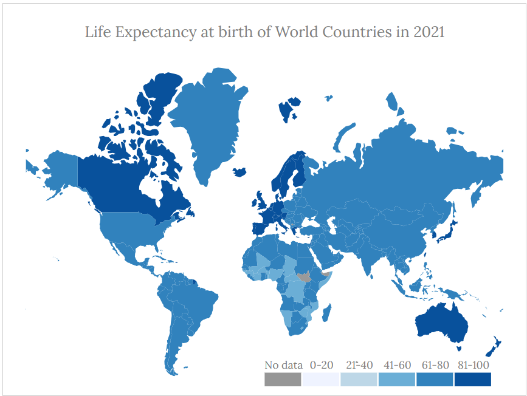
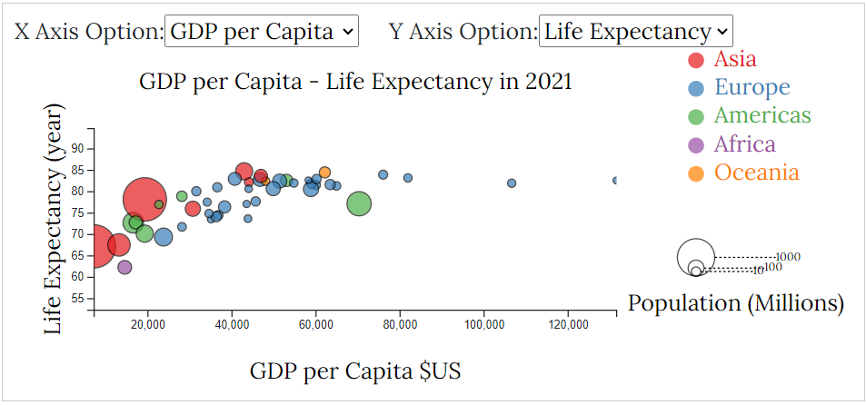
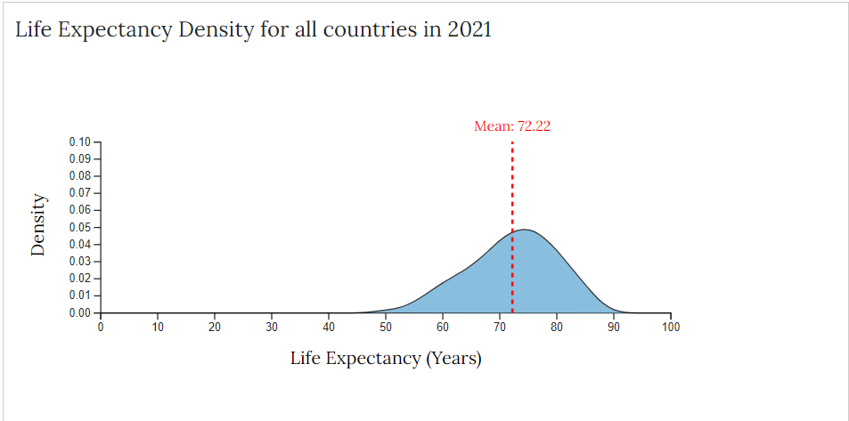

Welcome to our Project on Economic Factors and Life Expectancy! The purpose of this project is to explore and demonstrate the intricate relationships and correlations between various economic factors and life expectancy across different regions and populations. By leveraging the power of data visualization, we aim to provide clear and insightful representations of these relationships, making complex data more accessible and understandable.
Our objectives include analyzing how economic indicators such as GDP, income levels, healthcare expenditure, and life expectancy, determining the strength and nature of these correlations, highlighting disparities across different socio-economic groups and regions, and providing insights to inform policymakers and stakeholders. To achieve this, we will collect comprehensive data from reliable sources such as OECD, OWID,... apply statistical methods to analyze it, and create a series of interactive and static visualizations like choropleth, density chart and scatter plots. These visualizations will help in identifying patterns, trends, and anomalies, facilitating comparative analysis, and aiding in crafting a compelling narrative around the data.
By turning complex datasets into intuitive and engaging graphics, we aim to make it easier to grasp key insights, quickly recognize patterns, and compare life expectancy and economic variables across different groups and regions. The expected outcomes of this project include a comprehensive understanding of how economic factors influence life expectancy, identification of key economic drivers, and the production of clear visual representations that can be used for educational purposes, policy making, and further research. We are excited to embark on this journey and look forward to uncovering valuable insights that can contribute to improving life expectancy through informed economic policies and interventions. Thank you for your interest and participation in this project!
Thank you for your interest and participation in this project!
Choropleth Map: Life Expectancy
The Choropleth Map of Life Expectancy for all countries is an effective visualization tool designed to illustrate the geographic distribution of life expectancy across the globe.
This chart uses varying shades of blue color to represent different ranges of life expectancy, with a legend indicating categories in a range of years. By using color gradients, this map allows for an immediate visual comparison between countries, highlighting regions with higher or lower life expectancies. Additionally, interactive features enhance user engagement: when hovering over a country, detailed information about its life expectancy appears, providing context and deeper insights. Furthermore, a year slider enables users to observe changes over time, offering a dynamic way to explore historical trends and patterns in life expectancy.
This combination of static and interactive elements makes the Choropleth Map a powerful tool for identifying global health disparities and informing policy and research.
Scatter Plot: Life Expectancy vs GDP
The Scatter Plot depicting Life Expectancy versus GDP/GDP per capita is a v aluable visualization tool for understanding the relationship between economic prosperity and life expectancy across different countries.
This dynamic chart not only showcases each country's life expectancy and GDP/GDP per capita through plotted points, but it also offers the flexibility to change options for the x-axis and y-axis, enabling comparisons between various economic indicators. Each plot point can also dynamically adjust its size to reflect the population of the corresponding country. The involvement of a legend for both plot size and continent, differentiated by color, aids in interpretation. Interactive features such as hovering over a plot for detailed information, highlighting plots by continent, zooming in, and moving the plot enhance user engagement and facilitate deeper insights. Additionally, hovering over the continent legend highlights plots belonging to that continent, allowing for focused analysis. Furthermore, a year slider enables users to observe changes over time, providing a dynamic exploration of historical trends and patterns.
This combination of static and interactive elements makes the Scatter Plot a powerful tool for identifying correlations between economic factors and life expectancy, informing policy decisions, and fostering research in public health and economics.
Density Chart: Life Expectancy
The Density Chart depicting Life Expectancy offers a comprehensive view of the distribution of life expectancy worldwide, complemented by a line indicating the mean life expectancy across all countries for the specified year.
This visualization provides a nuanced understanding of the global variation in life expectancy, allowing for insights into trends and disparities. By utilizing a density plot, the chart effectively illustrates the concentration and spread of life expectancy values, offering a clear depiction of regions with higher or lower life expectancies. The involvement of a mean line enables users to compare the distribution to the average, identifying deviations and outliers. This chart serves as a powerful tool for gaining further insights into life expectancy worldwide, facilitating exploration and analysis across different years. The interactive slider feature enhances usability, allowing users to dynamically observe changes over time and uncover trends in global life expectancy patterns.
This combination enables a comprehensive visualisation of global life expectancy trends, allowing for nuanced insights and comparisons over time.